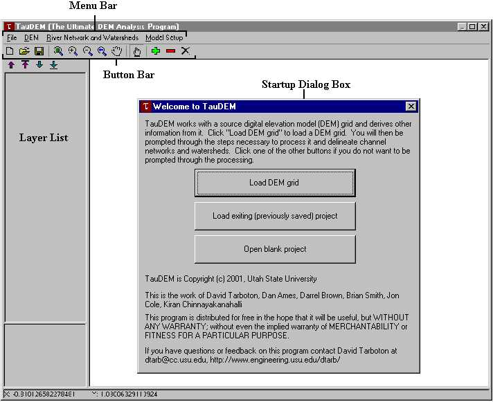
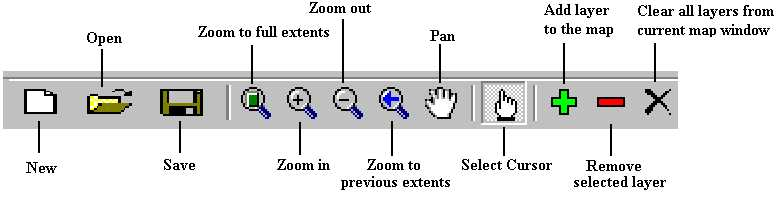
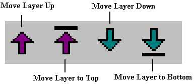
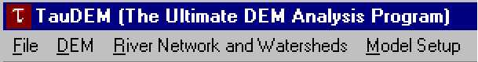
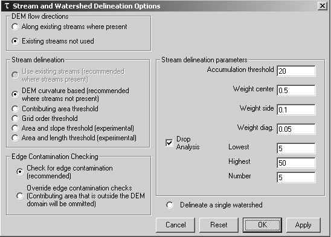
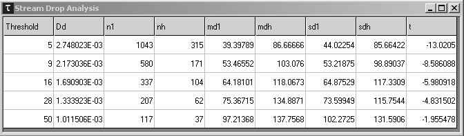
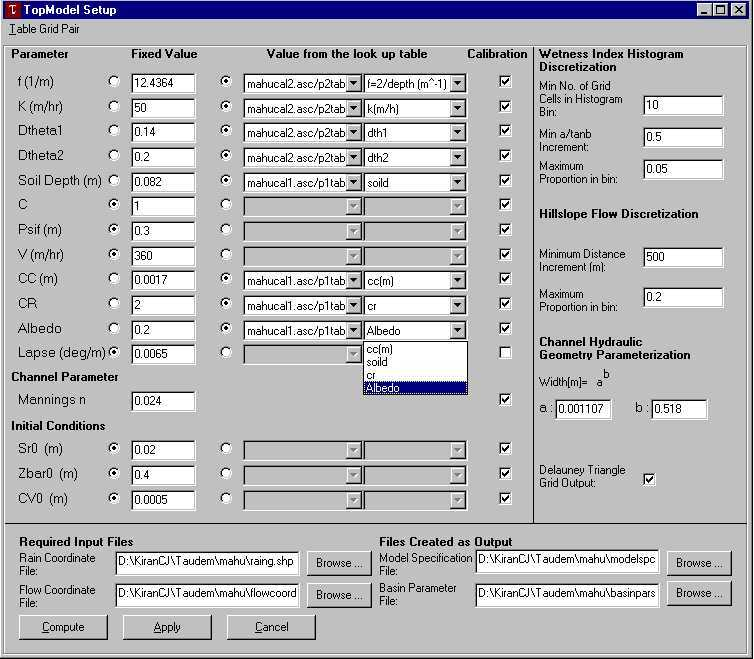
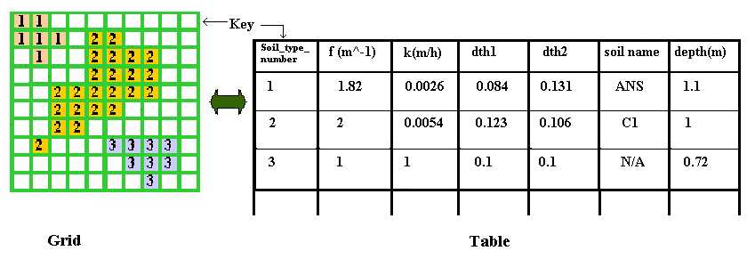

TauDEM, Terrain analysis using Digital Elevation Models
This is an archive of an old version of TauDEM whose use is no longer recommended. For the latest version see http://hydrology.usu.edu/taudem
David G. Tarboton
July 18, 2001
Utah State University
8200 Old Main Hill
Logan, UT 84322-8200
USA
http://www.engineering.usu.edu/dtarb/
email: dtarb@cc.usu.edu
TauDEM is a still somewhat experimental effort to develop a graphical
user interface version of my programs that have been available in command
line version for several years. This program is Copyright (C) 2001
David Tarboton, Utah State University. This program is distributed
for free in the hope that it will be useful, but WITHOUT ANY WARRANTY;
without even the implied warranty of MERCHANTABILITY or FITNESS FOR A PARTICULAR
PURPOSE.
Installation
This is an archive of an old version of TauDEM whose use is no longer recommended. For the latest version see http://hydrology.usu.edu/taudem
Download taudem.exe. The installation package and software was built for Windows 98.
The programs and what they do.
TauDEM is launched as is common from the Start/programs button, or from
a shortcut, or by clicking on a previously saved *.tdp project file.
Click on commands and buttons below to go to the help for them.

Startup Dialog Box
-
Load DEM Grid: To work with
a new DEM grid file. Grid file can be any of the following formats, ESRI,
ASCII or TMDL toolkit binary grids.
-
Load existing (previously saved) project: To open an existing Taudem
Project (*.tdp) file.
Button Bar
The tools in the button bar are used to navigate within the
project, and to execute functions.

New, Open and Save
These buttons start a new TauDEM project, open an exsiting project from
a *.tdp file or save the current project in a *.tdp file.
Zoom to full extents
This button scales the map window to the extents of the current project.
Zoom in
This tool allows the user to view a smaller region of the map in greater
depth. Click in the map window on the region of study. When the zoom in
feature is selected, a left mouse click will zoom in, and a right mouse
click will zoom out. To zoom to a specific area, left click and drag the
mouse to enclose the area. The view will then zoom to those extents.
Zoom out
When selected, this tool will show more of the map in less detail. A
left click will zoom out; a right click will reverse the process.
Zoom to previous extents
This will get back the last position of the map on the map window. It
can be used along with Zoom-in and Zoom-out to get the desired view of
the map. When the user zooms in/out mistakenly, he can use this tool to
get back at his previous view.
Pan
This tool moves the portion of the map on display in the map window.
Click on a region of the map and drag the mouse; dragging to the left will
display the map to the right, and vice versa.
Select Cursor
This tool is used to select grid cells or graphical objects. At
present this is used for the selection of outlet points.
Add layer
This button allows users to add a new layer in the project. At present
bitmap images and shape files are the only data formats supported.
Data layers added should have consistent geographic projections.
Remove Selected Layer
This tool will remove the selected layer from the project. Layers
may be selected by clicking in the layer list window.
Clear all layers
To remove all the layers from the map window.
Layer Order arrows
These arrows control the order in which layers are displayed.
Layers at the top in the legend are displayed on top of lower layers.

Menu Bar

File menu options
-
Prepare Connected Reach Network From Shape File: This launches a 'Network Builder' form that will take any
polyline shape file and build a connected reach network file.
-
This Select Existing Connected Reach Network File: This MUST have
as input a reach file created previously by the 'Network Builder'.
DEM menu options
-
Do all preprocessing: This
runs the commands given below in sequence
-
Convert connected reach network to forced flow direction grid: This takes as input a network river reach
file from the network builder and outputs a grid of flow directions along the
rivers to enforce drainage along delineated river channels. These flow
directions are in a file with suffix 'fdr' and are used by Flood if the option
to use them under River Network and Watersheds/Method Options is set.
-
Fill pits and nondraining hollows: This takes as input an elevation data grid and outputs a grid
file 'fel' with pits filled, using the flooding algorithm. The river
flow enforcement direction grid is an optional input, and if input, pits will
be filled consistent with drainage along existing streams.
-
Compute D8 flow directions:
This takes as input pit filled elevation data file 'fel' and outputs D8 flow
directions 'p' and slopes 'sd8' for each grid cell. The following coding is
used for direction of flow from a pixel to ONE of its eight neighbors:
4 3 2
5 1
6 7 8
In flat areas flow directions are assigned away from higher ground
and towards lower ground using the method of Garbrecht and Martz (1997).
The river flow enforcement direction grid is an optional input, and if
input, directions will be set consistent with drainage along existing streams.
-
Compute Dinf flow directions: The Dinf approach assigns a flow direction based on steepest
slope on a triangular facet (Tarboton, 1997). This is saved as an angle 'ang'
in radians anti-clockwise from east. In flat areas the D8 flow directions are
converted to angles and used.
-
Compute drainage area by D8 method: This takes as input a D8 flow
directions file 'p' and outputs the contributing area. The result is the
number of grid cells draining through each grid cell. By default
the program checks for edge contamination.
The edge contamination checking may be overridden with an option in the River
Network and Watersheds/Method Options form.
-
Compute specific catchment area by Dinf method: This takes as input
a Dinf angle file 'ang' and outputs the specific catchment area. Specific
catchment area is defined as contributing area per unit contour length.
Here the contour length is taken as the grid cell size. The result
has length units the same as grid cell size. By default the program
checks for edge contamination.
The edge contamination checking may be overridden with an option in the River
Network and Watersheds/Method Options form.
-
Compute grid network order, Upslope total flow length, Upslope longest
flow length: This takes as
input a D8 flow directions file 'p' and outputs three grid files:
'plen' Each grid cell contains the path length from the furthest
cell that drains to each cell.
'tlen' Each grid cell contains the total length of all paths
draining to each cell.
'gord' Each grid cell contains the Strahler order associated
with that cell for a flow network defined using the D8 flow directions
and including each grid cell. Strahler order is defined as follows.
Cells that don't have any other grid cells draining in to them are order
1. When two (or more) flow paths of different order join the order
of the downstream flow path is the order of the highest incoming flow path.
When two (or more) flow paths of equal order join the downstream flow path
is increased by 1. Algorithmically this is implemented as:
Order = Max(Highest incoming flow path order, Second highest incoming
flow path order + 1)
These outputs are used by netsetup in some of the options
for mapping channel networks.
River Networks and Watersheds menu options
-
Do all watershed and network delineation steps: This runs the commands given below in the correct
sequence.
-
Specify outlets:
Brings up a form that allows you to click on the map to identify outlets.
-
Set or Change Method Options...: This brings up a form to toggle various method options and
control network delineation methods.
-
River Network Raster (Full): This uses the network delineation parameters to define a
grid of the river network, useful for identifying outlets. Valid outlet
points are only those on the 'src' grid produced here.
-
River Network Raster (Upstream of Outlets): This uses the network delineation parameters to define
a grid of the river network, upstream of the outlets. This is necessary
for the creation of networks and subwatersheds.
-
Drop Analysis: This brings
up a table of stream drops useful for identifying the correct channel network
identification threshold.
-
Create Network and Sub-Watersheds: This converts the grid of river network cells into a
shapefile with attributes for each reach. Local watersheds draining to
each reach are also delineated as a grid and shape file.
-
Compute distance to streams: This computes a grid where the value
in each grid cell location is the distance along the flow path to the nearest
stream (as delineated by the Create Network and Sub-Watersheds function).
These functions work together. The "set or change method options..."
command brings up the following window.

This controls the algorithm used to delineate streams, the threshold
and parameters associated with the algorithm, and whether a stream drop
analysis is to be used to decide on the threshold. The methods for
defining channel networks are:
Use existing streams. To use this method existing streams
need to have been "burned in" to the flow direction grid with the command
"Convert connected reach network to forced flow direction grid" The
channel network raster is then defined from these flow directions.
No parameters are required.
DEM curvature based. The DEM is first smoothed by a kernel
with the weights at the center, sides and diagonals as specified.
The Peuker and Douglas (1975) method (also explained in Band, 1986) is
then used to identify upwards curved grid cells. Briefly this method
flags the entire grid, then examines in a single pass each quadrant of
4 grid cells and unflags the highest. The remaining flagged cells
are deemed "upwards curved" and if viewed resemble a channel network, although
sometimes lacking connectivity, or requiring thinning, issues that were
discussed in detail by Band (1986). The thinning and connecting of
these grid cells is achieved here by computing the contributing area using
only these upwards curved cells. An accumulation threshold on the
number of these cells is used to map the channel network.
Contributing area threshold. A threshold on the
contributing area (in number of cells) computed by the D8 (suffix ad8)
method is used to delineate streams.
Grid order threshold. A threshold on the network order
grid (suffix gord) is used to delineate streams. This is the network
pruning by order approach suggested by Peckham (1995) and used in RiverTools.
Area and slope threshold. A threshold is applied to the
product A Sy with the threshold and exponent specified.
A is the Dinf specific catchment area (suffix sca) and S is the specific
catchment area (suffix slp). This method was suggested by Montgomery
and Dietrich (1992). (They used the exponent y = 2 and threshold
C = 200 m in their study).
Area and length threshold. This is an experimental method that
might be justified by searching for a departure from Hack's law. Streams
are mapped as initiating when A > M Ly . Here A is the D8 contributing area (suffix
ad8) and L the longest upstream flowpath (suffix plen). In branching
systems, Hack's law suggests that L =
1/M A1/y with 1/y = 0.6 (or 0.56) (y about 1.7). In parallel
flow systems L is proportional to A (y about 1). This method tries
to identify the transition by using an exponent y somewhere inbetween (y
about 1.3)
If drop analysis is checked, then the threshold is searched between
the lowest and highest values given, using the number of steps given on
a log scale. For the science behind the drop analysis see Tarboton
et al. (1991, 1992), Tarboton and Ames (2001). The smallest threshold
in the set searched with absolute value of the t statistic less than 2
is selected. This is done automatically during the River Network
Raster (Upstream of Outlets) step. The threshold selected is saved
in the threshold variable so may be inspected afterwards by viewing the
options window.
The "Drop Analysis" command displays a table showing the information
used in the drop analysis, as follows

The columns are:
Threshold: The threshold used in the network delineation algorithm.
Dd: The drainage density (inverse length units - typically m)
of the resulting network.
n1: Number of first order streams (Strahler ordering) in network
with specified threshold.
nh: Number of higher order streams (Sequential segments of the
same order are counted as one Strahler stream) in network with specified
threshold.
md1: Mean drop (elevation difference between start and end) of
first order streams.
mdh: Mean drop of higher order streams.
sd1: Standard deviation of first order stream drops.
sdh: Standard deviation of higher order stream drops.
t: Students t statistic for the difference between the first order
and higher order mean stream drops.

The procedure suggested in Tarboton et al. (1991, 1992) and Tarboton
and Ames (2001) is to select the smallest threshold for which the absolute
value of the t statistic is less than 2. This selects the highest
resolution network consistent with the "constant drop law". In the
display above the threshold of 50 would be selected. It is worthwhile
to view the drop analysis because the threshold steps are sometimes quite
coarse, so the user may want to use the Specify Method Options command
to change the number of intervals and lowest and highest values used in
the search. Also it can occur that a large threshold is "correct"
but a small threshold results in second or higher order streams also extending
into the region that should not be streams. If these dominate the
sample the following sequence of t statistics might result:
<2, <2, <2, >2, >2, <2, <2, ...
The automatic procedure in these cases would pick the lowest threshold,
but it is probably better (and this is admittedly subjective, unfortunately)
to pick the 6th threshold. In making this judgement I feel that it
is best to consider many things, like sample sizes (is the t statistic
robust), the visual impression in comparison to contour crenulations, and
the drainage density that would result from a Slope versus Area plot as
discussed in Tarboton et al., (1991, 1992). The automated procedure
is therefore not foolproof and some degree of judgement and subjectivity
is required.
Model Setup menu options
Topmodel Setup
TauDEM includes the capability to create input files for TOPNET, a networked
version of TOPMODEL used by David Tarboton and Ross Woods (NIWA, New Zealand).
The result is a very specific model specification file 'modelspc.dat'.
The TOPNET model we plan to include with TauDEM at some point in the future,
but currently is in a form that is rather complicated to use.

The variables under 'Parameter' and 'Initial Conditions' can be assigned
a fixed value or be set to be read from a look-up table associated with
a variable classification grid by selecting the radio buttons. If the option
of look-up table is chosen the user has to load the appropriate grid-table
pair. Also, the user has to assign each variable the corresponding grid-table
pair and the field in the table, from which the value has to be read. Combo
boxes under 'Value from the look up table' help in making the selections.
The lookup table should be a comma delimited text file with one header
row and first column giving the key to associate parameters in the table
with classification values in the corresponding grid. Following is
an example of a lookup table:
Soil_type_number,f (m^-1),k(m/h),dth1,dth2,soil name,depth(metres)
1,1.82,0.0026,0.084,0.131,ANS,1.1
2,2,0.0054,0.123,0.106,C1,1
3,1,1,0.1,0.1,N/A,0.72
4,3.33,0.001,0.087,0.158,KR,0.6
5,1.92,0.03,0.111,0.26,MT,1.04
6,1,1,0.1,0.1,N/A,0.72
7,1,1,0.1,0.1,N/A,0.9
8,2.67,0.001,0.099,0.138,PBuH,0.75
9,2.22,0.0004,0.117,0.107,WA/WAH,0.9
10,3.33,0.0066,0.113,0.16,WF/WO,0.6
...
Parameter values in each model element are computed by averaging over all
the grid cells for that model element based on table lookups above.
In case the grid associate with a lookup table has no data at a location
within a model element the fixed parameter value is used at that location.
Therefore the fixed value parameters serve as defaults, even when table
lookup is being used.
The checkboxes on the right (under calibration) control whether resulting
model element parameters can be calibrated by multiplying by a factor to
retain the spatial patterns provided through the GIS information in the
classification grid.
Rain Coordinate file and Flow Coordinate file are the files required
by the module to generate the output files, that are Model Specification
file and Basin Parameter file. Rain Coordinate file is a shape file (extension
'.shp') that contains the raingage point locations. The flow coordinate
file has not been implemented yet.
Topmodel uses a histogram discretization of the topographic wetness
index (ln(a/S) from the wetness index function above). The parameters
in the right pane control the bin size associated with this histogram.
Topmodel also uses a histogram discretization of overland flow distances
to channels (computed with the distance to stream function above).
The parameters in the right pane control the bin size associated with this
histogram.
The kinematic wave flow routing part of TOPNET needs channel widths.
These are estimated based on geomorphology using the drainage area and
the hydraulic geometry function with parameters in the right pane.
Topmodel estimates the rainfall input to each model element using weights
based upon delauney triangles. The delayney triangle check box controls
the output of a grid depicting these triangles so that they may be displayed.
Background on working with Digital Elevation Models
The data storage structures available to digitally encode topography comprise:
(1) Grid Digital Elevation Models (DEMs); (2) Triangular irregular networks
(TINs); and (3) contour based storage structures. Grid DEMs consist of
a matrix data structure with the topographic elevation of each pixel stored
in a matrix node. TINs store the X-Y location as well as elevation at irregularly
spaced nodes. Contour based data structures store vector data along contour
lines. Grid DEMs are readily available and simple to use and hence have
seen widespread application to the analysis of hydrologic problems. Slope,
flow directions, and contributing area are the primary hydrologic quantities
derived from DEMs. Other useful quantities are derived from these three.
Here grid DEM are used due to their availability and simplicity. The grid
DEM processing routines used are based upon methods described by O'Callaghan
and Mark (1984), Marks et al. (1984), Band (1986), Jenson and Domingue
(1988), Tarboton (1989, 1997) and Garbrecht and Martz (1997). The steps
involved are: (1) Pit filling corrections, (2) Computation of slopes and
flow directions; (3) Computation of contributing area and specific catchment
area and (4) Channel network extraction and computation of other quantities.
Pit Filling Corrections
Pits in digital elevation data are defined as grid elements or sets
of grid elements surrounded by higher terrain that, in terms of the DEM,
do not drain. These are rare in natural topography and generally assumed
to be artifacts arising due to the discrete nature and data errors in the
preparation of the DEM. They are eliminated here using a 'flooding' approach.
This raises the elevation of each pit grid cell within the DEM to the elevation
of the lowest pour point on the perimeter of the pit . Slopes and Flow
Directions
Working with grid DEMs slope may be computed as the difference in elevation
between two adjacent cells divided by the distance between them. In dealing
with flow this is usually done in a forward downwards direction. The slope
associated with a cell is the slope from the cell to a downslope neighbor.
This makes sense because it is where water will go. Radiation computations
sometimes use slope based upon central finite difference methods. The earliest
and simplest method for specifying flow directions is to assign flow from
each grid cell to one of its eight neighbors, either adjacent or diagonally,
in the direction with steepest downward slope. This method, designated
D8 (8 flow directions), was introduced by O'Callaghan and Mark (1984) and
has been widely used. The D8 approach has disadvantages arising from the
discretization of flow into only one of eight possible directions, separated
by 45odeg; . These have motivated the development of other methods
comprising multiple flow direction methods , random direction methods and
grid flow tube methods . Tarboton (1997) discusses the relative merits
of these.
In the D¥ method, the flow direction
angle measured counter clockwise from east is represented as a continuous
quantity between 0 and 2p. This angle is determined
as the direction of the steepest downward slope on the eight triangular
facets formed in a 3 x 3 grid cell window centered on the grid cell of
interest as illustrated in figure 1. A block-centered representation is
used with each elevation value taken to represent the elevation of the
center of the corresponding grid cell. Eight planar triangular facets are
formed between each grid cell and its eight neighbors. Each of these has
a downslope vector which when drawn outwards from the center may be at
an angle that lies within or outside the 45o (p/4
radian) angle range of the facet at the center point. If the slope vector
angle is within the facet angle, it represents the steepest flow direction
on that facet. If the slope vector angle is outside a facet, the steepest
flow direction associated with that facet is taken along the steepest edge.
The slope and flow direction associated with the grid cell is taken as
the magnitude and direction of the steepest downslope vector from all eight
facets. This is implemented using equations given in Tarboton (1997).

Figure 1. Flow direction defined as steepest downward slope on planar
triangular facets on a block centered grid.
In the case where no slope vectors are positive (downslope), the flow
direction is set using the method of Garbrecht and Martz (1997) for the
determination of flow across flat areas. This makes flat areas drain away
from high ground and towards low ground. The D¥
method is preferred for the computation of flow directions on hillslopes
where D8 grid bias is significant in the calculation of specific catchment
area. D8 is still used for the definition of channel networks because we
can not (have not yet learned to) work with channel networks that bifurcate
in a downwards direction.
Contributing Area
Upslope area (counted in terms of the number of grid cells) is calculated
for both single and multiple flow directions using a recursive procedure
that is an extension of the very efficient recursive algorithm for single
directions (Mark, 1988). The upslope area of each grid cell is taken as
its own area (one) plus the area from upslope neighbors that have some
fraction draining to it. The flow from each cell either all drains to one
neighbor, if the angle falls along a cardinal (0, p/2,
p,
3p/2) or diagonal ( p/4,
3p/4, 5p /4, 7p/4)
direction, or is on an angle falling between the direct angle to two adjacent
neighbors. In the latter case the flow is proportioned between these two
neighbor pixels according to how close the flow direction angle is to the
direct angle to those pixels, as illustrated in Figure 1. Specific catchment
area, a, is then upslope area per unit contour length, taken here as the
number of cells times grid cell size (cell area divided by cell size).
This assumes that grid cell size is the effective contour length, b, in
the definition of specific catchment area and does not distinguish any
difference in contour length dependent upon the flow direction.
The contributing area programs check for edge contamination
. This is defined as the possibility that a contributing area value
may be underestimated due to grid cells outside of the domain not being
counted. This occurs when drainage is inwards from the boundaries
or areas with no data values for elevation. The algorithm recognizes
this and reports no data for the contributing area. It is common
to see streaks of no data values extending inwards from boundaries along
flow paths that enter the domain at a boundary. This is the desired
effect and indicates that contributing area for these grid cells is unknown
due to it being dependent on terrain outside of the domain of data available.
The edge contamination checking may be overridden with an option in the
River
Network and Watersheds/Method Options form in cases where you know
this is not an issue or want to ignore these problems, if for example the
DEM has been clipped along a watershed outline.
Channel Networks
When a map of contributing area is viewed using a threshold, the channel
networks stand out as those cells with contributing area greater than a
threshold of contributing area. It is an issue to decide the most appropriate
threshold, or whether some other quantity such as slope should be part
of the threshold. This is discussed at length in my research papers, Tarboton
et al. (1991, 1992). One approach that has some theoretical justification
is to look for a break in the plot of slope versus contributing area. Once
a threshold has been established the channel network can be defined (mapped)
as all those grid cells with contributing area greater than the threshold.
Data formats
Grid data
The programs are written to access the ESRI, ASCII or TMDL toolkit
binary grid formats. The programs can access ASCII grid data files in the
format used by ESRI for export of files from ArcView and Arc/Info and a
direct access binary grid format we have defined. The ASCII grid
data file format comprises a few lines of header data followed by lists
of cell values. The header data includes the following keywords and values:
-
ncols - number of columns in the data set.
-
nrows - number of rows in the data set.
-
xllcenter or xllcorner - x-coordinate of the center or
lower-left corner of the lower-left cell.
-
yllcenter or yllcorner - y-coordinate of the center or
lower-left corner of the lower-left cell.
-
cellsize - cell size for the data set.
-
nodata_value - value in the file assigned to cells whose value is unknown.
This keyword and value is optional. The nodata_value defaults to -9999.
For example,
ncols 480
nrows 450
xllcorner 378923
yllcorner 4072345
cellsize 30
nodata_value -32768
43 3 45 7 3 56 2 5 23 65 34 6 32 etc
35 45 65 34 2 6 78 4 38 44 89 3 2 7 etc
etc
The first row of data is at the top of the data set, moving from left to
right. Cell values should be delimited by spaces. No carriage returns are
necessary at the end of each row in the data set. The number of columns
in the header is used to determine when a new row begins. The number of
cell values must be equal to the number of rows times the number of columns.
Grid naming convention.
The following default naming convention is suggested and used by the
software. Any file names may be used with interactive input, but
I suggest sticking to this convention to avoid confusion. File names
are:
nnnnsss[.asc]
nnnn comprises the name of the dataset. Maximum length is operating
system dependent.
sss comprises the suffix used to designate the data type as follows:
| no suffix. |
Elevation data. |
|
| fel |
Pit filled elevation data. |
produced by Fill pits and nondraining hollows |
| p |
D8 drainage directions. |
produced by D8 flow directions |
| sd8 |
D8 slopes. |
produced by D8 flow directions |
| ad8 |
D8 contributing area’s, units are
number of grid cells. |
produced by D8 drainage area |
| slp |
Dinf slopes. |
produced by Dinf flow directions |
| ang |
Dinf flow directions. |
produced by Dinf flow directions |
| sca |
Dinf contributing area, units are specific catchment
area, i.e. number of grid cells times cell size. |
produced by Dinf drainage area |
| plen |
Longest path length to each grid point along
D8 directions. |
produced by Grid network order, Upslope total
flow length, Upslope longest path length function |
| tlen |
Total path length to each grid point along D8
directions. |
produced by Grid network order, Upslope total
flow length, Upslope longest path length function |
| gord |
Strahler order for grid network defined from
D8 flow directions. |
produced by Grid network order, Upslope total
flow length, Upslope longest path length function |
| src |
Network mask based on channel source rules. |
produced by RiverNetwork Raster |
| ord |
Grid with Strahler order for mapped stream network. |
produced by River Network Raster |
| w |
Subbasins mapped using subbasinsetup. |
produced Create Network and Sub-Watersheds |
| fdr |
Flow directions enforced to follow the existing
stream network |
produced by Convert Connected Reach Network
to Forced Flow Direction Grid |
| fdrn |
Flow directions enforced to follow the existing
stream network after cleaning to remove any loops |
produced by flood |
The .asc extension is used if the data is ASCII. The .bgd extension is
used for a direct access binary grid file. Otherwise it is assumed
to be ESRI's proprietary grid format.
Vector Data
The following files are used to represent channel networks.
Network connectivity file, nnnntree.dat.
This is essentially a list of links comprising a channel network. It
is text with 7 columns as follows:
1 LINK NUMBER
2 START POINT NUMBER IN COORD
3 END POINT NUMBER IN COORD
4 NEXT (DOWNSTREAM) LINK NUMBER IN CNET
5&6 PREVIOUS (UPSTREAM) LINK NUMBERS IN CNET
7 STRAHLER ORDER OF LINK IN CNET
This file is produced by the 'Create Network and Sub-Watersheds' command.
The second and third columns refer to point coordinates, vectors along
each link, from upstream to downstream, stored on the network coordinate,
or 'coord.dat', file.
Network coordinate file, nnnncoord.dat.
This is a list of coordinates defining the points along each channel
link. It is text with 5 coulmns of data as follows:
1 X COORDINATE (metres)
2 Y "
3 DISTANCE ALONG CHANNELS TO GAUGE (metres or whatever units grid size
is in)
4 ELEVATION (metres or whatever units the DEM is in)
5 CONTRIBUTING AREA (meter2 or whatever units grid size
is in)
This file is produced by the 'Create Network and Sub-Watersheds' command.
The coordinates are based on the coordinate system (and projection) implicit
in the header bounding box information in the raster grid file. Coordinates
are the centers of grid elements (pixels) corresponding to each channel
network link. This file is only useful in conjunction with the 'tree' file
which gives the start and end position (line or record) in this file of
each channel network link.
Shape Files
This is an open ESRI data format that stores vector data in DBF files.
It is described in a white
paper. TauDEM reads EPA reach files in Shape file format to enforce
flow directions to follow existing streams where desired. TauDEM
also outputs the delineated channel network and reach subwatersheds in
Shape file format. The attribute table information associated with
these shapefiles is as follows:
*net.shp
| LINKNO |
Link Number. A unique number associated with each link (segmentof
channel between junctions) |
| DSLINKNO |
Link Number of the downstream link. -1 indicates that this does
not exist. |
| USLINKNO1 |
Link Number of first upstream link |
| USLINKNO2 |
Link Number of second upstream link. |
| Order |
Strahler Stream Order |
| Length |
Length of the link |
| Magnitude |
Shreve Magnitude of the link. This is the total number of sources
upstream |
| DS_Cont_Ar |
Drainage area at the downstream end of the link. Generally this is
one grid cell upstream of the downstream end because the drainage area
at the downstream end grid cell includes the area of the stream being joined. |
| Drop |
Drop in elevation from the start to the end of the link |
| Slope |
Average slope of the link (computed as drop/length) |
| Straight_L |
Straight line distance from the start to the end of the link |
| US_Cont_Ar |
Drainage area at the upstream end of the link |
| WSNO |
Watershed number. Cross reference to the *w.shp and *w grid files
giving the identification number of the watershed draining directly to
the link. |
| DOUT_END |
Distance to the outlet from the downstream end of the link |
| DOUT_START |
Distance to the outlet from the upstream end of the link |
| DOUT_MID |
Distance to the outlet from the midpoint of the link |
*w.shp
The only attribute of this shapefile is polygon_id, identifier. This
corresponds with the WSNO watershed number in the *net.shp file.
Test data. The enclosed file test.asc
is a small test grid dataset. The illustrative data given above is
from the Grey River watershed on the west coast of the South Island of
New Zealand, based on contours supplied by Land Information New Zealand.
History and Old Versions
This is version 1.0a - released July 13, 2001 (Friday the 13'th).
This fixes quite a few bugs and problems with the initial release that
was posted on May 21, 2001. This also adds TopSetup capability (although
we still sometimes have problems with this).
This is the first Graphic User Interface version. Older command
line software may be accessed at http://www.engineering.usu.edu/dtarb/tardem.html.
Acknowledgements
These have been developed during the course of my research over the years
with support from a variety of sponsors, whose support is gratefully acknowledged.
Specific sponsors include:
1. Massachusetts Institute of Technology, research assistantship under
Rafael Bras, for my Sc.D. research where this all got started. Some remnants
of the code from this work still remain.
2. National Science Foundation grant EAR-9318977 for the development
of the D¥ approach (Tarboton, D. G., 1997).
3. Forest Renewal of British Columbia, for the development of Terrain
Stability Mapping methodology and Arcview Implementation, in a collaborative
project involving Canadian Forest Products Ltd., Vancouver, British Columbia,
Terratech Consulting Ltd., British Columbia (Bob Pack), and Craig Goodwin.
4. National Science Foundation grant INT-9724720 and NIWA New Zealand
for the work on methods
for mapping and identification of flow methods from digital elevation data.
5. Idaho National Engineering and Environmental Laboratory for work
on the adaptation of these codes for use with the TMDL Toolkit, and integration
of flow with existing channel networks.
References
Band, L. E., (1986), "Topographic partition of watersheds with digital
elevation models," Water Resources Research, 22(1): l5-24.
Garbrecht, J. and L. W. Martz, (1997), "The Assignment of Drainage Direction
Over Flat Surfaces in Raster Digital Elevation Models," Journal of Hydrology,
193: 204-213.
Jenson, S. K. and J. O. Domingue, (1988), "Extracting Topographic Structure
from Digital Elevation Data for Geographic Information System Analysis,"
Photogrammetric Engineering and Remote Sensing, 54(11): 1593-1600.
Mark, D. M., (1988), "Network models in geomorphology," Chapter 4 in
Modelling in Geomorphological Systems, Edited by M. G. Anderson, John Wiley.,
p.73-97.
Marks, D., J. Dozier and J. Frew, (1984), "Automated Basin Delineation
From Digital Elevation Data," Geo. Processing, 2: 299-311.
Montgomery, D. R. and W. E. Dietrich, (1992), "Channel Initiation and
the Problem of Landscape Scale," Science, 255: 826-830.
O'Callaghan, J. F. and D. M. Mark, (1984), "The Extraction of Drainage
Networks From Digital Elevation Data," Computer Vision, Graphics and Image
Processing, 28: 328-344.
Peckham, S. D., (1995), "Self-Similarity in the Three-Dimensional Geometry
and Dynamics of Large River Basins," PhD Thesis, Program in Geophysics,
University of Colorado.
Peuker, T. K. and D. H. Douglas, (1975), "Detection of surface-specific
points by local parallel processing of discrete terrain elevation data,"
Comput. Graphics Image Process., 4: 375-387.
Tarboton, D. G., (1989), "The analysis of river basins and channel networks
using digital terrain data," Sc.D. Thesis, M.I.T., Cambridge, MA, (Also
available as Tarboton D. G., R. L. Bras and I. Rodriguez-Iturbe, (Same
title), Technical report no 326, Ralph M. Parsons Laboratory for Water
resources and Hydrodynamics, Department of Civil Engineering, M.I.T., September
1989).
Tarboton, D. G., R. L. Bras and I. Rodriguez-Iturbe, (1991), "On the
Extraction of Channel Networks from Digital Elevation Data," Hydrologic
Processes, 5(1): 81-100.
Tarboton, D. G., R. L. Bras and I. Rodriguez-Iturbe, (1992), "A Physical
Basis for Drainage Density," Geomorphology, 5(1/2): 59-76.
Tarboton, D.
G., (1997), "A New Method for the Determination of Flow Directions and
Contributing Areas in Grid Digital Elevation Models," Water Resources Research,
33(2): 309-319.
Tarboton,
D. G. and U. Shankar, (1998), "The Identification and Mapping of Flow Networks
from Digital Elevation Data," Invited Presentation at AGU Fall Meeting,
San Francisco, December 6 to 10.
Tarboton, D. G. and D. P. Ames, (2001),"Advances in the mapping of flow
networks from digital elevation data," in World
Water and Environmental Resources Congress, Orlando, Florida, May 20-24,
ASCE. [ PDF
(0.5MB)]